🐺 守誓者：深入密林
Oathsworn: Into the Deepwood · 设计：Jamie Jolly · Shadowborne Games 出版 · 1–4 人 · 官方英文规则书全文翻译（20 页 · AI 辅助机翻）
本页收录《守誓者：深入密林》（Oathsworn: Into the Deepwood, 2022）的原版官方规则书全部 20 页（底本：Shadowborne Games 官方 GDrive 规则书，Oathsworn-Rulebook.pdf），逐页随图排列，点击任意图片即可放大查看；每页下方默认折叠了该页的 AI 辅助中文机翻对照，需要时可展开。规则内容归 Shadowborne Games 及版权方所有，收录仅供个人学习查阅。
整理说明：机翻对照按本站术语口径对齐（牌库/手牌/回合/轮/板块/指示物等），PDF 图文混排页的语序可能与原书视觉顺序略有出入；规则细节请一律以页面上方原书页面为准。
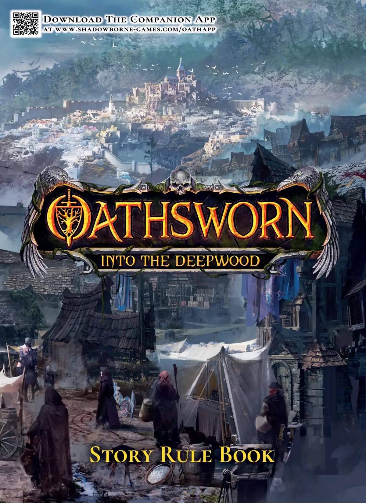
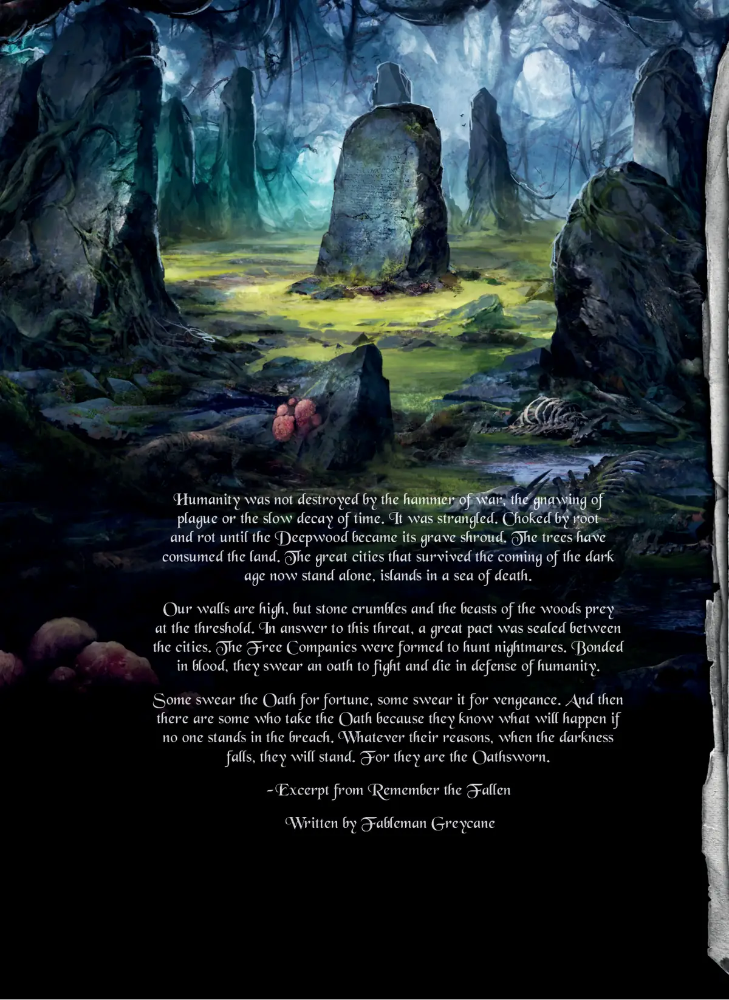
📝 第 2 页 AI 机翻对照（点击展开）
人类并非被战争的铁锤、瘟疫的啃噬或时间的缓慢腐朽所毁灭。人类是被扼杀的。被根须和腐朽窒息，直到深林成为它的裹尸布。树木吞噬了大地。那些在黑暗时代降临时幸存下来的伟大城市如今孤零零地矗立着，如同死亡之海中的岛屿。
我们的城墙很高，但石头会崩塌，森林的野兽在门槛处捕猎。为了应对这一威胁，城市之间缔结了伟大的盟约。自由兵团成立，用以狩猎噩梦。他们以血为盟，立誓为保卫人类而战死。有些人为了财富而立下誓言，有些人为了复仇。还有些人立下誓言，因为他们知道如果无人挺身而出将会发生什么。无论他们的理由是什么，当黑暗降临时，他们会挺身而出。因为他们是誓约者。
——摘自《铭记逝者》
作者：Fableman Greycane
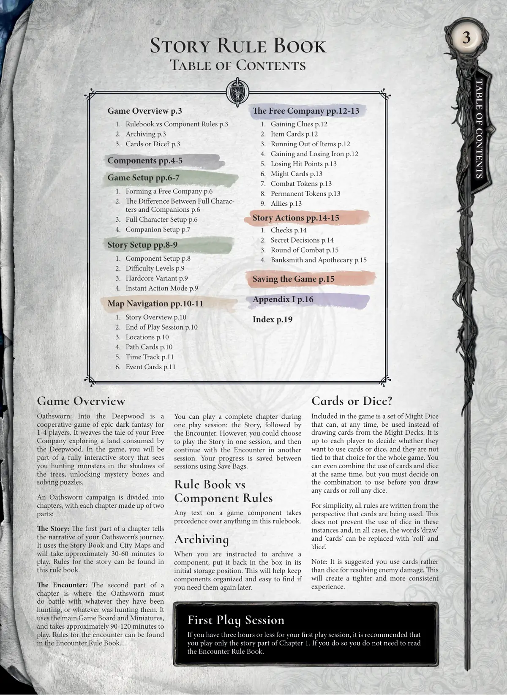
📝 第 3 页 AI 机翻对照（点击展开）
游戏概览
《誓言守护者：深入深林》(Oathsworn: Into the Deepwood) 是一款适合1-4玩家的合作史诗黑暗奇幻游戏。它编织了你的自由佣兵团(Free Company)探索一个被深林(Darkwood)吞噬的土地的故事。在游戏中，你将参与一个完全互动的故事，在树木的阴影中狩猎怪物，解锁神秘宝盒并解决谜题。
一个《誓言守护者》战役分为多个章节，每个章节由两部分组成：
故事：章节的第一部分讲述你誓言守护者(Oathsworn)旅程的叙事。它使用故事书(Story Book)和城市地图(City Maps)，游戏时间约为30-60分钟。故事的规则可以在本规则书中找到。
遭遇战：章节的第二部分是誓言守护者必须与他们正在狩猎的任何东西，或任何正在狩猎他们的东西进行战斗的地方。它使用主游戏版图(Game Board)和迷你模型(Miniatures)，游戏时间约为90-120分钟。遭遇战的规则可以在遭遇战规则书(Encounter Rule Book)中找到。
目录
- 故事概览 p.10
- 游戏结束会话 p.10
- 地点 p.10
- 路径卡 p.10
- 时间轨道 p.11
- 事件卡 p.11
地图导航 pp.10-11
组件 pp.4-5
游戏概览 p.3
- 组建自由佣兵团 p.6
- 完整角色与同伴的区别 p.6
- 完整角色设置 p.6
- 同伴设置 p.7
游戏设置 pp.6-7
- 组件设置 p.8
- 难度级别 p.9
- 硬核变体 p.9
- 即时行动模式 p.9
故事设置 pp.8-9
附录 I p.16
- 规则书与组件规则 p.3
- 归档 p.3
- 卡牌还是骰子？ p.3
目录
你可以在一次游戏会话中完成一个完整的章节：先进行故事部分，然后是遭遇战。然而，你也可以选择在一次会话中进行故事部分，然后在另一次会话中继续进行遭遇战。你的进度使用存档袋(Save Bags)在会话之间保存。
规则书与
组件规则
游戏组件上的任何文本优先于本规则书中的任何内容。
归档
当指示你归档一个组件时，将其放回盒子中其初始存储位置。这将有助于保持组件的组织性，并在以后需要时容易找到。
故事规则书
卡牌还是骰子？
游戏中包含一套力量骰(Might Dice)，可以在任何时候代替从力量牌库(Might Decks)中摸牌使用。由每个玩家决定他们是否想使用卡牌或骰子，他们不必在整个游戏中都坚持这个选择。你甚至可以同时结合使用卡牌和骰子，但在你摸任何卡牌或掷任何骰子之前，必须决定要使用的组合方式。
为简单起见，所有规则都从使用卡牌的角度编写。这并不妨碍在这些情况下使用骰子，并且在所有情况下，"摸"
'卡牌'可以替换为'投掷'和'骰子'。
注意：建议您使用卡牌而非骰子来决定敌人伤害。这将创造更紧凑且一致的游戏体验。
《自由连队》第12-13页
保存游戏 第15页
索引 第19页
故事行动 第14-15页
- 获取线索 第12页
- 物品卡牌 第12页
- 物品用尽 第12页
- 获取和失去铁 第12页
- 失去生命值 第13页
- 力量卡牌 第13页
- 战斗指示物 第13页
- 永久指示物 第13页
- 盟友 第13页
- 检定 第14页
- 秘密决定 第14页
- 回合战斗 第15页
- 银匠和药剂师 第15页
首次游戏会话
如果您首次游戏会话时间在三小时或以内，建议您只游玩第一章的故事部分。如果这样做，您无需阅读《遭遇规则书》。
游戏设置
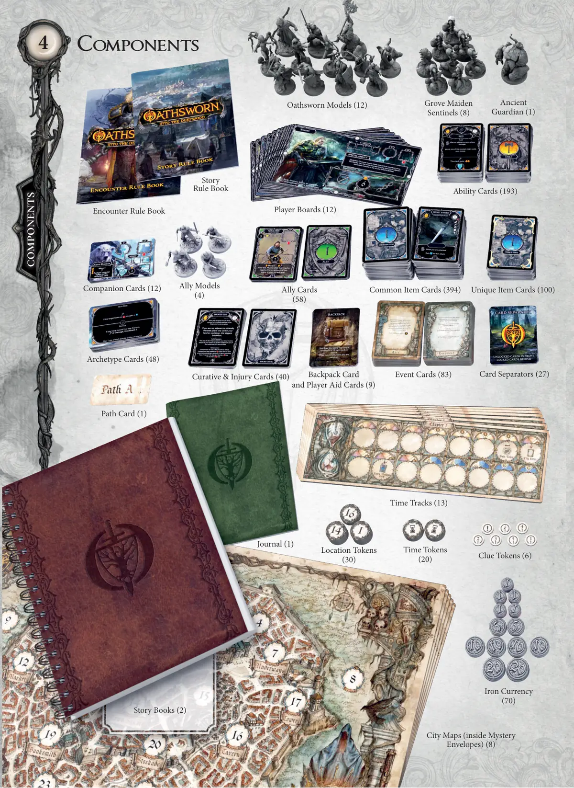
📝 第 4 页 AI 机翻对照（点击展开）
组件
事件卡牌 (83)
城市地图（在神秘信封内）(8)
玩家版图 (12)
位置指示物
(30)
时间轨道 (13)
时间指示物
(20)
能力卡牌 (193)
背包卡牌
和玩家辅助卡牌 (9)
盟友卡牌
(58)
伙伴卡牌 (12)
原型卡牌 (48)
盟友模型
(4)
线索指示物 (6)
铁质货币
(70)
组件
治疗与伤害卡牌 (40)
宣誓者模型 (12)
古代
守护者 (1)
林地少女
哨兵 (8)
普通物品卡牌 (394)
独特物品卡牌 (100)
路径卡牌 (1)
卡牌分隔器 (27)
日记 (1)
遭遇规则书
故事
规则书
故事书 (2)
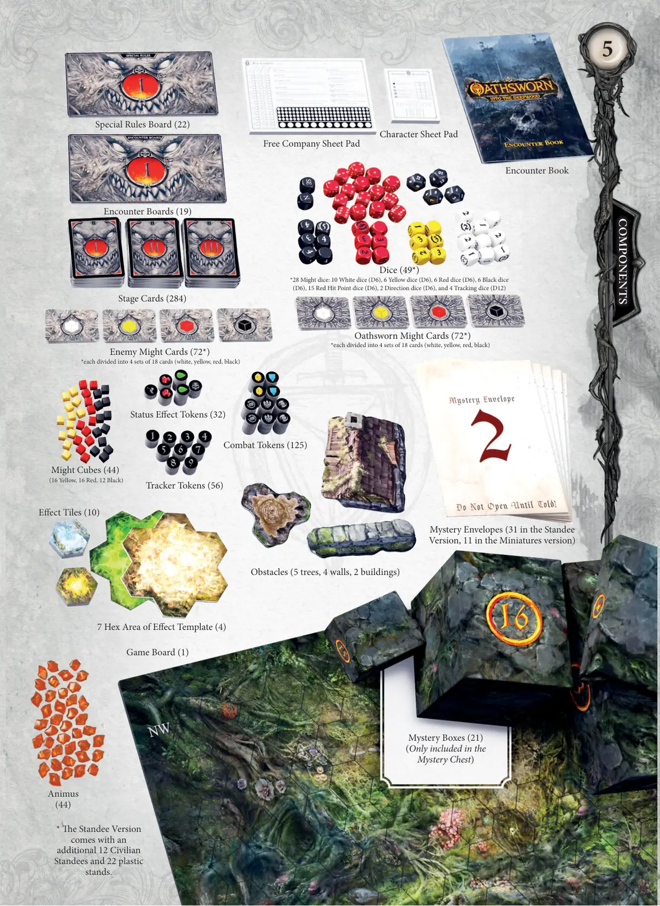
📝 第 5 页 AI 机翻对照（点击展开）
状态效果指示物 (32)
敌人力量卡牌 (72*)
宣誓者力量卡牌 (72*)
*每种分为4组18张卡牌（白色、黄色、红色、黑色）
骰子 (49*)
追踪指示物 (56)
战斗指示物 (125)
*28个力量骰子：10个白色骰子（D6），6个黄色骰子（D6），6个红色骰子（D6），6个黑色骰子
（D6），15个红色生命值骰子（D6），2个方向骰子（D6），和4个追踪骰子（D12）
自由公司表格本
特殊规则版图 (22)
遭遇版图 (19)
阶段卡牌 (284)
效果板块 (10)
游戏版图 (1)
角色表格本
障碍物（5棵树，4面墙，2栋建筑）
7个六边形区域效果模板 (4)
灵魂
(44)
力量方块 (44)
神秘盒子 (21)
（仅包含在
神秘宝箱中）
*每种分为4组18张卡牌（白色、黄色、红色、黑色）
组件
(16个黄色，16个红色，12个黑色)
遭遇书
神秘信封（立牌版有31个，人偶版有11个）
- 立牌版附带
额外的12个平民
立牌和22个塑料底座。
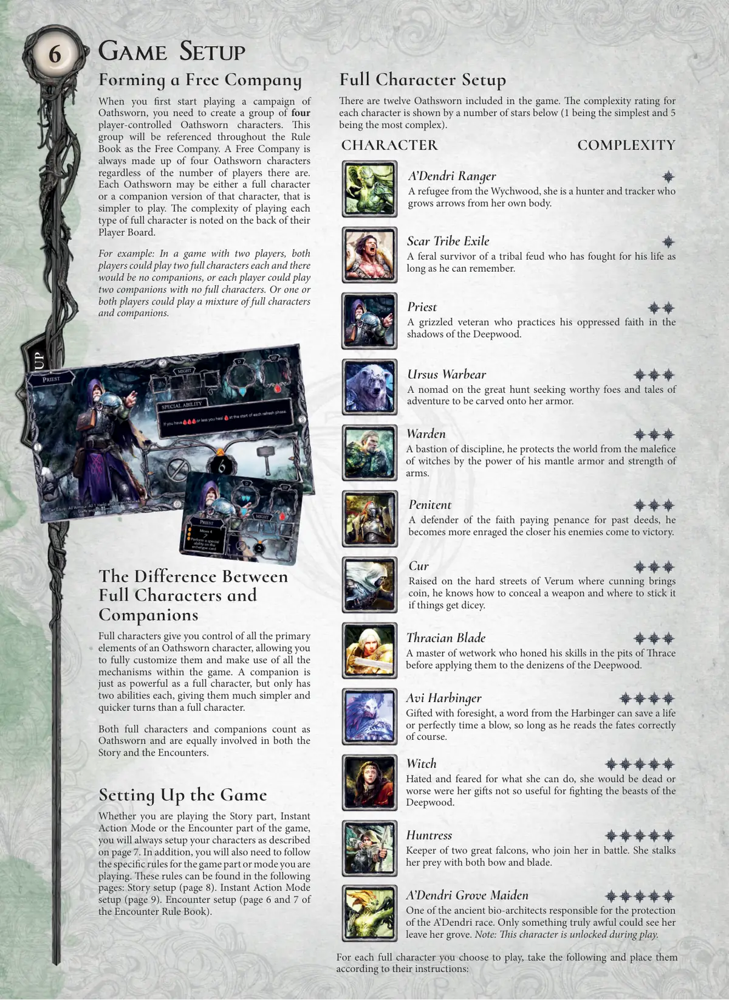
📝 第 6 页 AI 机翻对照（点击展开）
组建自由连队
当你首次开始进行《Oathsworn》(誓言守护者)的战役时，你需要创建一个由四名玩家控制的Oathsworn角色组成的队伍。这个队伍将在规则书中被统称为自由连队(Free Company)。无论有多少玩家参与，自由连队始终由四名Oathsworn角色组成。
每个Oathsworn可以是完整版角色，也可以是该角色的伙伴版本，后者玩法更简单。每种完整版角色的复杂度在其玩家版图(Player Board)背面有标注。
例如：在两名玩家的游戏中，两名玩家都可以各自操控两个完整版角色，没有伙伴；或者每名玩家都操控两个伙伴，没有完整版角色。又或者一名或两名玩家都可以操控完整版角色和伙伴的混合组合。
游戏设置
完整版角色设置
游戏包含十二名Oathsworn角色。每个角色的复杂度评级由下方的星号数量表示（1星最简单，5星最复杂）。
A'Dendri游侠(A'Dendri Ranger)
来自Wychwood( wychwood森林)的难民，是一位猎人和追踪者，能从自己体内生长出箭矢。
Scar部落流亡者(Scar Tribe Exile)
部落冲突中的野蛮幸存者，从记事起就为生存而战。
牧师(Priest)
一位饱经风霜的老兵，在Deepwood(深林)的阴影中实践着他受压迫的信仰。
守卫(Warden)
纪律的堡垒，他依靠斗篷盔甲的力量和武器的力量保护世界免受女巫的邪恶侵害。
忏悔者(Penitent)
信仰的守护者，为过去的罪行赎罪，当敌人接近胜利时，他会变得更加愤怒。
女巫(Witch)
因其能力而被人憎恨和恐惧，若非她的天赋对对抗Deepwood的野兽如此有用，她早已死亡或遭遇更糟的命运。
Ursus战熊(Ursus Warbear)
伟大狩猎中的游牧者，寻找值得的对手和冒险故事，并将它们雕刻在她的盔甲上。
Cur
在Verum(维鲁姆)艰难的街头长大，在那里狡黠能带来金钱，他知道如何隐藏武器，以及在情况变得棘手时该将它刺向何处。
Avi先知(Avi Harbinger)
拥有预见能力，先知的一句话可以挽救生命，也可以完美地把握攻击时机，当然，前提是他正确解读了命运。
A'Dendri林地少女(A'Dendri Grove Maiden)
负责保护A'Dendri种族的古代生物建筑师之一。只有真正可怕的事情才能让她离开她的林地。注意：此角色在游戏过程中解锁。
色雷斯之刃(Thracian Blade)
一位暗杀大师，在色雷斯(Thrace)的竞技场中磨练了他的技能，然后将它们应用于Deepwood的居民。
女猎人(Huntress)
两只伟大猎鹰的守护者，它们与她一同战斗。她用弓和刀追踪猎物。
完整版角色与
伙伴的区别
完整版角色让你能够控制Oathsworn角色的所有主要元素，使你能够
to fully customize them and make use of all the
mechanisms within the game. A companion is
just as powerful as a full character, but only has
two abilities each, giving them much simpler and
quicker turns than a full character.
Both full characters and companions count as
Oathsworn and are equally involved in both the
Story and the Encounters.
角色
复杂度
游戏设置
设置游戏
无论您是在玩故事部分、即时行动模式还是游戏的遭遇部分，您都将始终按照第7页所述设置您的角色。此外，您还需要遵循您正在游玩的游戏部分或模式的特定规则。这些规则可以在以下页面找到：故事设置（第8页）。即时行动模式设置（第9页）。遭遇设置（遭遇规则书第6页和第7页）。
对于您选择游玩的每个完整角色，请取以下物品并根据其说明放置它们：
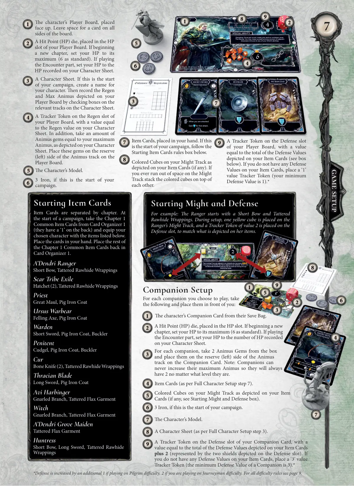
📝 第 7 页 AI 机翻对照（点击展开）
角色的玩家版图，正面朝上放置。在版图四周留出放置卡牌的空间。
一个生命值（HP）骰子，放置在你的玩家版图的HP槽中。如果开始新章节，将你的HP设置为最大值（标准为6）。如果进行遭遇战部分，将你的HP设置为角色记录表上记录的HP值。
一个角色记录表。如果这是你战役的开始，为你的角色创建一个名字。然后在角色记录表的相关轨道上勾选框，记录玩家版图上显示的再生（Regen）和最大灵能（Max Animus）值。
角色的模型。
一个指示物放在玩家版图的再生槽上，数值等于角色记录表上的再生值。此外，取等于你最大灵能值的灵能宝石数量，如角色记录表所示。将这些宝石放在玩家版图上灵能轨道的储备（左侧）区域。
物品卡牌，放置在你的手牌中。如果这是你战役的开始，请遵循下方的"起始物品卡牌"规则框。
一个指示物放在玩家版图的防御槽上，数值等于你的物品卡牌上显示的防御值总和（见下方框）。如果你的物品卡牌上没有任何防御值，放置一个数值为"1"的指示物（你的最小防御值为1）。*
在你的力量轨道上放置彩色方块，如你的物品卡牌所示（如果有）。如果你的力量轨道空间用完，将彩色方块堆叠在一起。
角色从其拯救袋中取出的伙伴卡牌。
一个生命值（HP）骰子，放置在HP槽中。如果开始新章节，将你的HP设置为最大值（标准为6）。如果进行遭遇战部分，将你的HP设置为角色记录表上记录的HP数量。
物品卡牌（根据完整角色设置步骤7）。
在你的力量轨道上放置彩色方块，如你的物品卡牌所示（如果有，见起始力量和防御框）。
伙伴设置
对于你选择游玩的每个伙伴，取以下物品并将它们放在你面前：
起始物品卡牌
物品卡牌按章节分开。在战役开始时，从卡牌整理器1中取第1章通用物品卡牌（卡牌背面有"1"标记），并为你的选定角色装备下列物品。将卡牌放入你的手牌中。将剩余的第1章通用物品卡牌放回卡牌整理器1。
牧师
巨锤，铸铁外套
流放者部族
手斧（2），破旧生皮包裹
熊战士
伐木斧，铸铁外套
守卫者
短剑，铸铁外套，圆盾
女巫
节枝，破旧亚麻服饰
A'Dendri游侠
短弓，破旧生皮包裹
科人
骨刀（2），破旧生皮包裹
艾维先驱
节枝，破旧亚麻服饰
A'Dendri林中少女
破旧亚麻服饰
女猎人
短弓，长剑，破旧生皮绷带
忏悔者
短棍，熟铁外套，圆盾
色雷斯剑
长剑，熟铁外套
初始力量和防御
例如：游侠起始装备为短弓和破旧生皮绷带。在设置阶段，将一个黄色方块放置在游侠的力量轨道上，并将一个数值为2的追踪指示物放置在防御槽位，以匹配其装备上显示的内容。
3铁，如果这是你的战役开始时。
3铁，如果这是你的战役开始时。
角色模型
角色卡（根据完整角色设置步骤3）。
在你的伙伴卡片的防御槽位上放置一个追踪指示物，其数值等于你的装备卡上显示的防御数值总和加2（由防御槽位上显示的两个盾牌表示）。如果你的装备卡上没有任何防御数值，则放置一个数值为"3"的追踪指示物（伙伴的最低防御值为3）*。
为每个伙伴，从盒子里取出2个灵能宝石，并将它们放置在伙伴卡上灵能轨道的储备（左侧）区域。注意：伙伴永远不能增加其最大灵能值，因此无论他们处于什么等级，他们始终会有2点灵能。
*如果在朝圣者难度上游玩，防御额外增加1点；如果你在工匠难度上游玩，防御额外增加2点。所有难度规则见第9页。
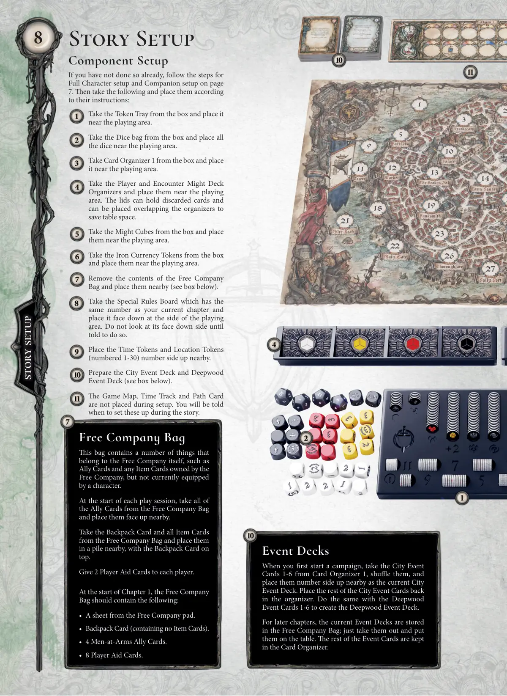
📝 第 8 页 AI 机翻对照（点击展开）
如果你还没有这样做，请按照第
7 页上的完整角色设置和伙伴设置步骤进行操作。然后取出以下物品并根据它们的说明放置：
故事设置
自由公司袋
这个袋子包含一些属于自由公司本身的物品，例如伙伴卡牌和任何由自由公司拥有但当前未被角色装备的物品卡牌。
在每个游戏回合开始时，从自由公司袋中取出所有伙伴卡牌，并将它们正面朝上放置在附近。
从自由公司袋中取出背包卡牌和所有物品卡牌，将它们放在一堆附近，背包卡牌放在最上面。
给每位玩家2张玩家辅助卡牌。
在第1章开始时，自由公司袋应包含以下内容：
• 来自自由公司垫的一张纸。
• 背包卡牌（不含任何物品卡牌）。
• 4名重装伙伴卡牌。
• 8张玩家辅助卡牌。
事件牌堆
当你首次开始一个战役时，从卡牌整理器1中取出城市事件卡牌1-6，洗牌，并将它们数字面朝上放置在附近，作为当前城市事件牌堆。将剩余的城市事件卡牌放回整理器中。对深林事件卡牌1-6做同样操作，以创建深林事件牌堆。
对于后面的章节，当前事件牌堆存储在自由公司袋中；只需将它们取出并放在桌上。其余的事件卡牌保存在卡牌整理器中。
故事设置
1.
从盒中取出指示物托盘，并将其放置在游戏区域附近。
2.
从盒中取出骰子袋，并将所有骰子放置在游戏区域附近。
3.
从盒中取出卡牌整理器1，并将其放置在游戏区域附近。
4. 取出玩家和遭遇力量牌整理器，并将它们放置在游戏区域附近。盖子可以放置弃牌，并且可以重叠放置在整理器上以节省桌面空间。
5.
从盒中取出力量方块，并将它们放置在游戏区域附近。
6.
从盒中取出铁币指示物，并将它们放置在游戏区域附近。
7.
取出自由公司袋中的内容物并将其放置在附近（见下方方框）。
8.
取出与当前章节编号相同的特殊规则板，并将其正面朝下放置在游戏区域的一侧。在被告知之前，不要查看其正面。
9.
将时间指示物和位置指示物（编号1-30）数字面朝上放置在附近。
10. 准备城市事件牌堆和深林事件牌堆（见下方方框）。
11. 游戏地图、时间轨道和路径卡牌在设置阶段不放置。你将在故事中被告知何时设置这些物品。
组件设置
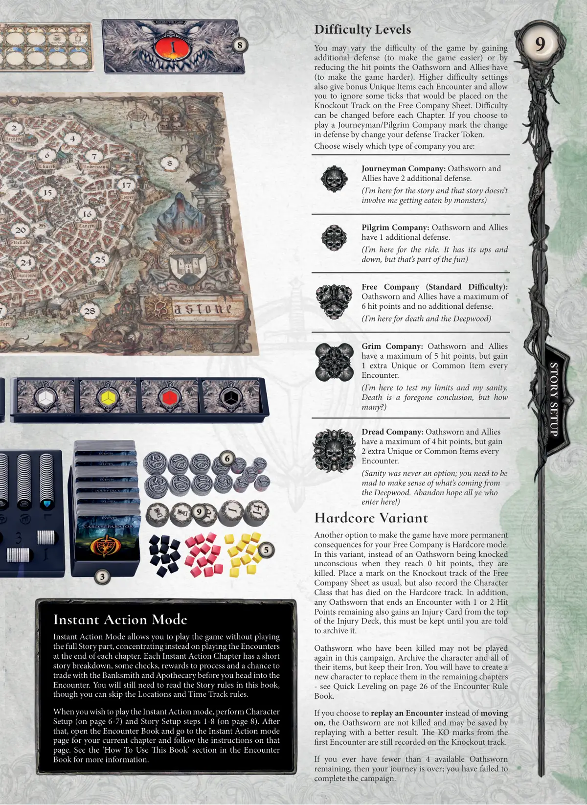
📝 第 9 页 AI 机翻对照（点击展开）
即时行动模式
即时行动模式允许你无需游玩完整的剧情部分，而是专注于游玩每章末尾的遭遇战。每个即时行动章节都有简短的故事分解、一些检定、需要处理的奖励，以及在进入遭遇战之前与银行家和药剂师交易的机会。你仍然需要阅读本书中的剧情规则，但可以跳过地点和时间轨道规则。
当你希望游玩即时行动模式时，执行角色设置（第6-7页）和剧情设置步骤1-8（第8页）。之后，打开遭遇战书，前往当前章节的即时行动模式页面，并按照该页面上的说明操作。更多详情请参阅遭遇战书中的"如何使用本书"部分。
难度等级
你可以通过获得额外防御（使游戏更容易）或减少誓约者与盟友的生命值（使游戏更难）来调整游戏难度。更高的难度设置也会在每个遭遇战中给予额外的独特物品奖励，并允许你忽略一些本应放置在自由公司版图击倒轨道上的标记。难度可以在每章之前更改。如果你选择游玩学徒/朝圣者公司，通过改变你的防御指示物来标记防御的变化。
学徒公司：誓约者与盟友有2点额外防御。
（我来这里是为了故事，而那个故事不涉及我被怪物吃掉）
硬核变体
另一种为你的自由公司带来更多永久后果的选择是硬核模式。在此变体中，当誓约者达到0点生命值时，他们不是被击晕，而是被杀死。像往常一样在自由公司版图的击倒轨道上放置标记，同时在硬核轨道上记录已死亡的角色职业。此外，任何在遭遇战结束时剩余1或2点生命值的誓约者也会从伤害牌库顶抽一张伤害牌，必须保留直到被告知归档。
被杀死的誓约者在本战役中不能再被使用。归档该角色及其所有物品，但保留他们的铁。你将需要创建一个新角色来替代他们在剩余章节中的位置——请参阅遭遇战规则书第26页的快速升级。
如果你选择重玩一个遭遇战而不是继续前进，誓约者不会被杀死，并且可以通过获得更好的结果而被拯救。第一次遭遇战的击倒标记仍然记录在击倒轨道上。
如果你拥有的可用誓约者少于4个，那么你的旅程就结束了；你未能完成这个战役。
剧情设置
明智地选择你的公司类型：
Pilgrim Company: Oathsworn and Allies
誓言者与盟友拥有 1 点额外防御。
（我来这里是为了体验旅程。它有起有落，但这也是乐趣的一部分）
Free Company (Standard Difficulty):
自由公司（标准难度）：
誓言者与盟友拥有最多 6 点生命值，没有额外防御。
（我来这里是为了死亡和深林）
Grim Company: Oathsworn and Allies
严酷公司：誓言者与盟友拥有最多 5 点生命值，但每次遭遇获得 1 个额外的独特或普通物品。
（我来这里是为了测试我的极限和理智。死亡是必然的结局，但能坚持多久？）
Dread Company: Oathsworn and Allies
恐怖公司：誓言者与盟友拥有最多 4 点生命值，但每次遭遇获得 2 个额外的独特或普通物品。
（理智从来不是选项；你必须疯狂才能理解来自深林的威胁。凡入此地者，皆应放弃希望！）
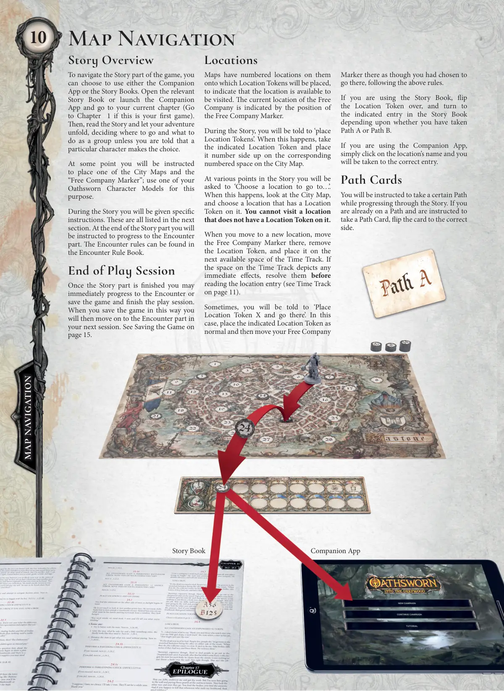
📝 第 10 页 AI 机翻对照（点击展开）
地图导航
故事概览
要导航游戏的故事部分，你可以选择使用配套应用程序或故事书。打开相关的故事书或启动配套应用程序，然后前往你当前的章节（如果是第一次游戏，请前往第1章）。接着，阅读故事，让你的冒险展开，集体决定去哪里和做什么，除非被告知某个特定角色做出选择。
在某个时刻，你将被指示放置一张城市地图和"自由公司标记"；为此目的，使用你的宣誓者角色模型之一。
在故事过程中，你将收到具体指示。这些都在下一节中列出。在故事部分结束时，你将被指示进入遭遇部分。遭遇规则可以在遭遇规则书中找到。
游戏会话结束
一旦故事部分完成，你可以立即进入遭遇部分，或者保存游戏并结束游戏会话。当你以这种方式保存游戏时，你将在下一会话中进入遭遇部分。请参阅第15页的保存游戏。
地图导航
地点
地图上有编号的地点，地点标记将被放置在这些地点上，以表明该地点可供访问。自由公司的当前位置由自由公司标记的位置表示。
在故事中，你将被指示"放置地点标记"。当这种情况发生时，取出指定的地点标记，将其数字面朝上放在城市地图上对应的编号空间上。
在故事的各个点，你可能会被要求"选择一个地点前往..."。当这种情况发生时，查看城市地图，选择一个有地点标记的地点。你不能访问没有地点标记的地点。
当你移动到一个新地点时，将自由公司标记移到那里，移除地点标记，并将其放在时间轨道上下一个可用的空间上。如果时间轨道上的空间描绘了任何立即生效的效果，在阅读地点条目之前解决它们（参见第11页的时间轨道）。
有时，你将被指示"放置地点标记X并前往那里"。在这种情况下，像平常一样放置指定的地点标记，然后按照上述规则，将你的自由公司标记移到那里，就好像你选择前往那里一样。
如果你使用的是故事书，翻转地点标记，然后根据你选择了路径A还是路径B，转向故事书中指定的条目。
如果你使用的是配套应用程序，只需点击地点的名称，你将被带到正确的条目。
路径卡
在推进故事的过程中，你将被指示选择某条路径。如果你
已经位于一条路径上并被要求抽取一张路径牌，将牌翻到正确的一面。
故事书
配套应用
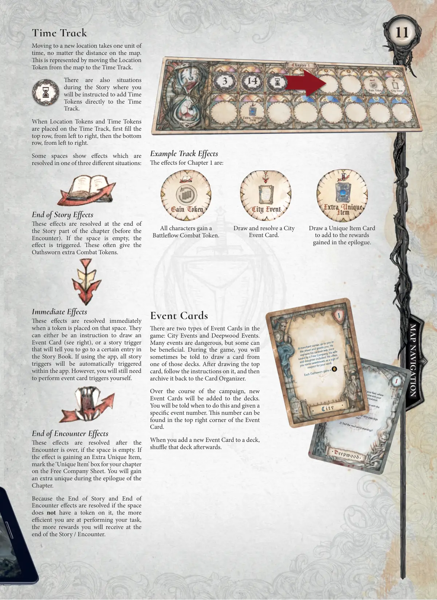
📝 第 11 页 AI 机翻对照（点击展开）
即时效果
当指示物被放置在该区域上时，这些效果会立即被解决。它们可以是抽取事件卡牌的指令（见右侧），或者是触发故事情节，指示你前往故事书中的特定条目。如果使用应用程序，所有故事触发器将在应用程序内自动触发。但是，你仍然需要自己执行事件卡牌触发器。
示例轨道效果
第一章的效果是：
地图导航
故事结束效果
这些效果在章节的故事部分结束时（在遭遇战之前）被解决。如果该区域为空，则触发该效果。这些效果通常会给予宣誓者额外的战斗指示物。
遭遇战结束效果
如果遭遇战结束且该区域为空，则这些效果会被解决。如果效果是获得一个额外的独特物品，请在自由公司表格上标记你章节的"独特物品"框。你将在该章节的尾声阶段获得一个额外的独特物品。
由于故事结束和遭遇战结束的效果在区域上没有指示物时会被解决，你在执行任务时越高效，在故事/遭遇战结束时获得的奖励就越多。
事件卡牌
游戏中有两种类型的事件卡牌：城市事件卡牌和深林事件卡牌。许多事件是危险的，但有些可能是有益的。在游戏过程中，有时你会被指示从其中一个牌库中抽取一张卡牌。抽取顶部的卡牌后，遵循上面的说明，然后将它归档回卡牌整理器。
在战役过程中，新的事件卡牌将被添加到这些牌库中。你会被告知何时这样做，并获得一个特定的事件编号。这个编号可以在事件卡牌的右上角找到。
当你向牌库添加新的事件卡牌后，请将该牌库洗牌。
时间轨道
无论地图上的距离如何，移动到新位置都需要一个时间单位。这通过将位置指示物从地图移动到时间轨道上来表示。
在故事过程中，也会有情况指示你直接将时间指示物添加到时间轨道上。
当位置指示物和时间指示物被放置在时间轨道上时，先从左到右填满顶行，然后从左到右填满底行。
一些区域显示的效果会在三种不同情况之一中被解决：
所有角色获得一个战斗流战斗指示物。
抽取并解决一张城市事件卡牌。
抽取一张独特物品卡牌，添加到尾声阶段获得的奖励中。
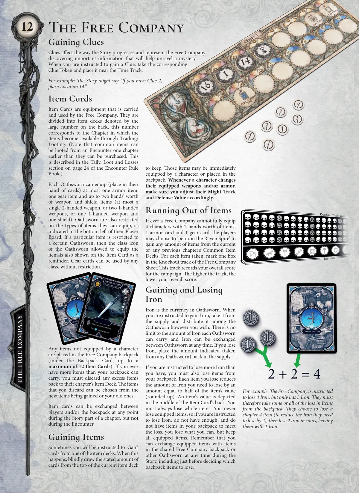
📝 第 12 页 AI 机翻对照（点击展开）
自由佣兵团
获取线索
线索影响故事进程，代表自由佣兵团发现的重要信息，这些信息将有助于解开谜团。
当被指示获取线索时，取出相应的线索指示物，并将其放置在时间轨道附近。
例如：故事可能会说"如果你有线索2，放置地点14"。
物品卡牌
物品卡牌是自由佣兵团携带和使用的装备。它们分为以背面大数字标记的物品牌库，这个数字对应于物品可通过交易/掠夺获得的章节。（注意：普通物品可以在购买前一章的遭遇中掠夺到。这一点在遭遇规则书第24页的计数、掠夺与损失部分有描述。）
每个宣誓者最多可以装备一件盔甲物品、一件装备物品，以及最多两手份的武器和盾牌物品（最多一件双手武器，或两件单手武器，或一件单手武器和一面盾牌）。宣誓者对可装备的物品类型也有限制，如在其玩家版图左下角所示。如果特定物品仅限某个宣誓者装备，则允许该宣誓者装备该物品的职业图标也会显示在物品卡牌上作为提醒。装备卡牌可被任何职业使用，无限制。
获取与失去铁
铁是《宣誓者》中的货币。当被指示获取铁时，从供应中取出并按你喜欢的方式分配给宣誓者。每个宣誓者可携带的铁的数量没有限制，铁可以在任何时候在宣誓者之间交换。如果你失去铁，将指定数量（从任何宣誓者处取出）放回供应中。如果被指示失去比你拥有的更多的铁，你也必须从背包中失去物品。你失去的每件物品都会减少你需要失去的铁的数量，减少量为物品价值的一半（向上取整）。物品价值显示在物品卡牌背面的中间。你必须总是失去完整的物品。你不会失去已装备的物品，因此如果你被指示失去铁，但数量不足，且背包中没有足够的物品来满足损失，你失去你能失去的部分，但保留所有已装备的物品。记住，你可以在故事过程中的任何时候，包括在决定要失去哪些背包物品之前，将已装备的物品与共享的自由佣兵团背包或其他宣誓者的物品进行交换。
例如：自由佣兵团被指示失去4铁，但只有3铁。因此他们必须从背包中失去部分或全部物品作为损失。他们选择失去一个第4章的物品（以减少他们需要失去的
以2分劣势输掉)，然后失去2点铁质硬币，留下1点铁质。
自由公司
任何未被角色装备的物品都会放入自由公司背包中（在背包卡牌下，最多可容纳12张物品卡）。如果你拥有的物品超过了背包的容量，你必须将多余的物品弃回其所属章节的物品牌库。你可以选择从新获得的物品或旧物品中弃置这些物品。物品卡可以在章节的故事部分的任何时候在玩家之间和/或背包中交换，但在遭遇阶段不行。
获得物品
有时你会被指示从某个物品牌库"获得"卡牌。当这种情况发生时，从当前物品牌库顶部盲摸指定数量的卡牌。保留这些卡牌。这些物品可以立即被角色装备或放入背包中。每当角色更换其装备的武器和/或护甲时，请确保相应地调整他们的力量值和防御值。
物品用尽
如果自由公司无法用4个角色的双手物品、1张护甲卡和1张装备卡完全装备，玩家可以选择"向 Raven Spire（乌鸦尖塔）请愿"从当前或任何先前章节的普通物品牌库中获得任意数量的物品。每取走一件物品，在自由公司表的击倒轨迹上标记一个方框。该轨迹记录了你在战役中的总分。轨迹越高，你的总分越低。
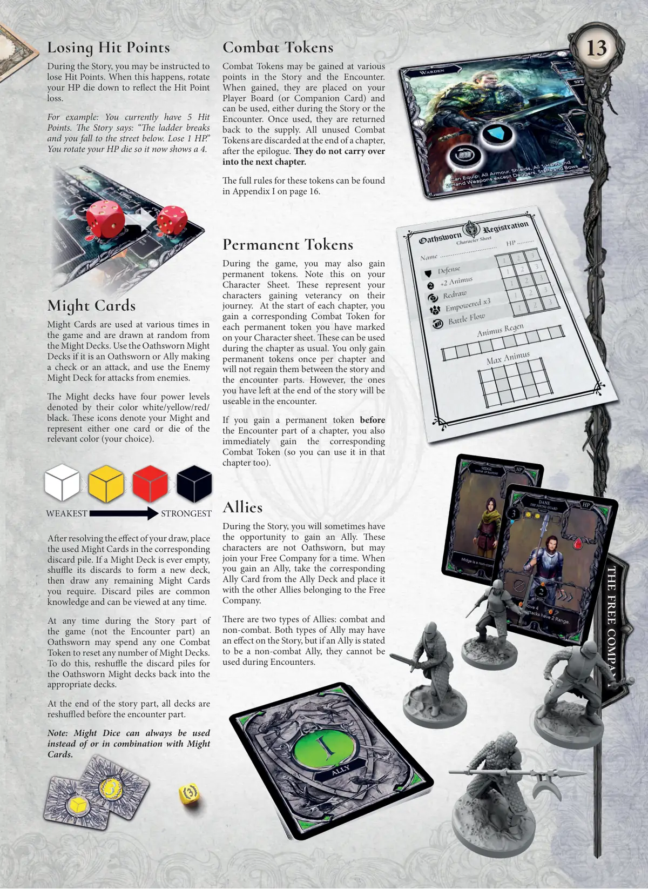
📝 第 13 页 AI 机翻对照（点击展开）
自由佣兵团
失去生命值
在故事中，你可能会被指示失去生命值。当这种情况发生时，旋转你的生命值骰子以反映生命值的损失。
例如：你当前有5点生命值。故事说："梯子断裂，你摔落到下方的街道。失去1点生命值。"你旋转你的生命值骰子，现在它显示为4。
力量卡牌
力量卡牌在游戏中的不同时间使用，并从力量牌库中随机抽取。如果是由誓言者或盟友进行检定或攻击，则使用誓言者力量牌库；如果是由敌人发起的攻击，则使用敌人力量牌库。
力量牌库有四个由颜色表示的力量等级：白色/黄色/红色/黑色。这些图标代表你的力量，可以代表一张相应颜色的卡牌或一个相应颜色的骰子（由你选择）。
永久指示物
在游戏中，你可能会获得永久指示物。在你的角色记录表上记录这一点。这些代表你的角色在旅途中获得的历练。在每个章节开始时，你为角色记录表上标记的每个永久指示物获得一个相应的战斗指示物。这些可以在章节中像平常一样使用。你每个章节只获得一次永久指示物，在故事部分和遭遇部分之间不会重新获得。然而，你在故事部分结束时剩余的指示物可以在遭遇部分中使用。
如果你在章节的遭遇部分之前获得了一个永久指示物，你也会立即获得相应的战斗指示物（因此你也可以在该章节中使用它）。
盟友
在故事中，你有时会有机会获得一个盟友。这些角色不是誓言者，但可能会暂时加入你的自由佣兵团。当你获得一个盟友时，从盟友牌库中取出相应的盟友卡牌，并将其与其他属于自由佣兵团的盟友放在一起。
盟友有两种类型：战斗型和非战斗型。两种类型的盟友都可能对故事产生影响，但如果盟友被明确为非战斗型盟友，他们在遭遇部分中不能使用。
战斗指示物
战斗指示物可以在故事和遭遇中的不同时间点获得。获得后，它们被放置在你的玩家版图（或伙伴卡牌）上，可以在故事或遭遇期间使用。一旦使用，它们会被放回供应区。所有未使用的战斗指示物在章节结束后，在尾声之后被弃置。它们不会带入下一章节。
这些指示物的完整规则可以在第16页的附录I中找到。
在处理完你抽取的效果后，将使用过的力量卡牌放入相应的弃牌堆。如果某个力量牌库变空，将其弃牌洗混形成新牌库，然后抽取你需要的任何剩余力量卡牌。弃牌堆是公开信息，可以随时查看。
在游戏的叙事部分（而非遭遇部分）的任何时候，宣誓者可以花费任意一个战斗指示物来重置任意数量的力量牌库。为此，将宣誓者力量牌库的弃牌堆重新洗牌并放回相应的牌库中。
在叙事部分结束时，所有牌库都会在遭遇部分开始前重新洗牌。
注意：力量骰子总是可以单独使用或与力量卡牌组合使用。
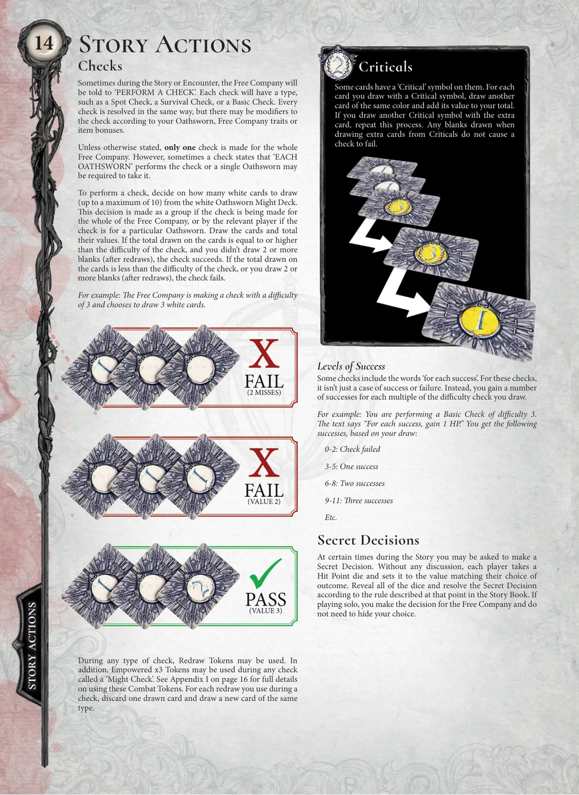
📝 第 14 页 AI 机翻对照（点击展开）
检定
在故事或遭遇过程中，有时会要求"自由连队"进行"检定"。每种检定都有类型，如侦查检定、生存检定或基础检定。所有检定的解决方式相同，但根据你的誓言者、自由连队特质或物品加成，可能会有检定修正值。
除非另有说明，整个自由连队只进行一次检定。然而，有时检定会说明"每个誓言者"进行检定，或者可能需要单个誓言者进行检定。
要进行检定，决定从白色誓言者力量牌库中抽取多少张白牌（最多10张）。如果检定是为整个自由连队进行的，则由集体决定；如果检定是为特定誓言者进行的，则由相关玩家决定。抽取牌并计算它们的总值。如果抽取牌的总值等于或高于检定的难度，且你没有抽到2张或更多的空白牌（重抽后），则检定成功。如果抽取牌的总值低于检定的难度，或者你抽到2张或更多的空白牌（重抽后），则检定失败。
例如：自由连队进行难度为3的检定，并选择抽取3张白牌。
秘密决定
在故事过程中的某些时刻，你可能被要求做出秘密决定。没有任何讨论，每位玩家取一个生命值骰子，将其设置为与所选结果值相匹配的值。揭示所有骰子，并根据故事书中该处描述的规则解决秘密决定。如果是单人模式，你代表自由连队做决定，无需隐藏你的选择。
成功等级
有些检定包含"每成功一次"的表述。对于这些检定，不仅仅是成功或失败的问题。相反，你根据抽取的检定难度的倍数获得一定数量的成功。
例如：你进行难度为3的基础检定。文本说"每成功一次，获得1点生命值"。根据你的抽取，你获得以下成功：
有些牌上有"关键"符号。对于每张有关键符号的牌，抽取另一张同色的牌并将其数值加到你的总分中。如果你在额外抽取的牌上又抽到关键符号，重复此过程。因关键牌额外抽取时抽到的任何空白牌不会导致检定失败。
关键牌
在任何类型的检定中，都可以使用重抽指示物。此外，在任何被称为"力量检定"的检定中，可以使用强化x3指示物。关于使用这些战斗指示物的完整详情，请参见第16页的附录I。在检定过程中每使用一次重抽，弃掉一张已抽取的牌，并抽取一张同类型的新牌。
0-2：检定失败
3-5：一次成功
6-8：两次成功
9-11：三次成功
等等。
故事行动
故事行动
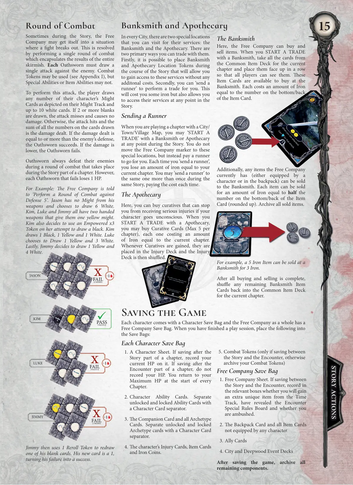
📝 第 15 页 AI 机翻对照（点击展开）
战斗轮
有时在故事过程中，自由公司可能会陷入需要战斗的境地。这通过执行一轮战斗来解决，这一轮战斗概括了整个小规模冲突的结果。每个誓言者必须对敌人进行一次攻击。可以使用战斗指示物（见附录I），但不能使用特殊能力或物品能力。要进行这次攻击，玩家抽取其角色力量轨道上所示数量的力量牌，以及最多10张白色牌。如果抽到2张或更多空白牌，则攻击未命中，不造成伤害。否则，攻击命中，所有抽取牌上的数字之和就是造成的伤害。如果造成的伤害等于或大于敌人的防御值，誓言者成功。如果伤害较低，誓言者失败。
在章节的故事部分进行的战斗轮中，誓言者总是会击败他们的敌人。然而，每个失败的誓言者会失去1点生命值。
例如：自由公司被告知"对防御值为5的敌人进行一轮战斗"。杰森的武器没有力量值，他选择抽取6张白色牌。金、卢克和吉米都有双手武器，各给他们提供1点黄色力量。金还决定在她的尝试中使用一个强化x3指示物来抽取一张黑色牌。金抽取了1张黑色牌、1张黄色牌和1张白色牌。卢克选择抽取1张黄色牌和3张白色牌。最后，吉米决定抽取1张黄色牌和4张白色牌。
在每个城市中，有两个特殊地点可以访问以获取服务：银行铁匠和药剂师。你可以通过两种主要方式与他们交易。首先，在故事过程中可以放置银行铁匠和药剂师地点指示物，这将使你无需额外费用就能获得这些服务。其次，你可以"派一名跑腿者"为你进行交易。这将消耗一些铁，但也允许你在故事过程中的任何时刻访问他们的服务。
派跑腿者
当你玩带有城市/城镇/村庄地图的章节时，你可以在故事过程中的任何时刻与银行铁匠或药剂师"开始交易"。你不需要将自由公司标记移动到这些特殊地点，而是付费让跑腿者代为前往。每次你"派跑腿者"，你会失去等于当前章节数值的铁量。你可以在同一故事中多次向同一个地点"派跑腿者"，每次都支付费用。
药剂师
在这里，你可以购买治疗品，如果你的角色失去知觉，这些治疗品可以防止你受到严重伤害。当你与药剂师"开始交易"时，你可以购买治疗牌（每章最多5张），每张的治疗品铁量消耗等于当前章节数值。每当获得治疗品时，它们会被
放入伤害牌库，然后将伤害牌库洗牌。
故事行动
银行家
在这里，佣兵团可以买卖物品。当你与银行家开始交易时，取出当前章节的通用物品牌库中的所有卡牌，将它们正面朝上排成一行，以便所有玩家都能看到。这些物品卡可以在银行家处购买。每张卡牌的价格等于其底部/背面数字数量的铁。
银行家和药剂师
每个角色都带有一个角色存档袋，整个佣兵团有一个佣兵团存档袋。当你完成一次游戏会话后，将以下内容放入存档袋中：
- 角色记录表。如果在章节的故事部分后保存，记录你当前的HP。如果在章节的遭遇部分后保存，不要记录HP。你在每个章节开始时恢复到最大HP。
2. 角色能力卡。用角色卡分隔器分开已解锁和未解锁的能力卡。
3. 伙伴卡和所有职业卡。用角色卡分隔器分开已解锁和未解锁的职业卡。
- 角色的伤害卡、物品卡和铁币。
- 佣兵团记录表。如果在故事和遭遇之间保存，在相应方框中记录你是否将从时间轨道获得一个额外的独特物品、是否已揭示遭遇特殊规则板以及你是否被伏击。
2. 背包卡和未被任何角色装备的所有物品卡。
3. 盟友卡
4. 城市和深林事件牌库
佣兵团存档袋
每个角色存档袋
保存游戏
吉米然后使用1个重掷指示物重新抽一张空白卡。他的新卡是1，将他的失败变成了成功。
例如，一张5铁的物品可以在银行家处以3铁的价格出售。
在所有买卖完成后，将剩余的银行家物品卡洗回当前章节的通用物品牌库。
此外，佣兵团当前拥有的任何物品（无论是被角色装备还是在背包中）都可以出售给银行家。每件物品可以出售的价格等于其物品卡底部/背面数字数量的一半（向上取整）。将所有已出售物品归档。
保存游戏后，归档所有剩余组件。
- 战斗标记（仅在故事和遭遇之间保存时，否则归档你的战斗标记）
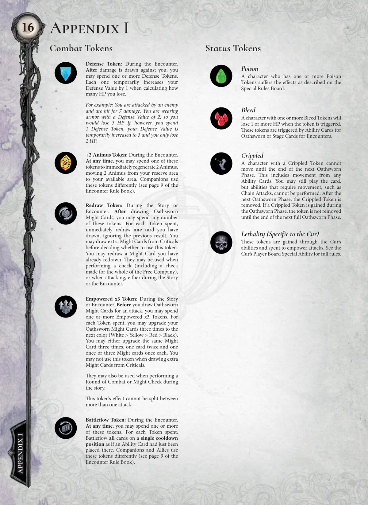
📝 第 16 页 AI 机翻对照（点击展开）
附录 I
战斗指示物
防御指示物：在遭遇阶段。
当你受到伤害后，你可以花费一个或多个防御指示物。
每个指示物在计算你失去多少生命值时，会临时将你的防御值提高1。
例如：你被敌人攻击并受到7点伤害。你穿着防御值为2的盔甲，因此你会失去3点生命值。然而，如果你花费1个防御指示物，你的防御值临时提高到3，你只失去2点生命值。
重抽指示物：在故事或遭遇阶段。在抽取誓言力量卡后，你可以花费任意数量的这些指示物。每花费一个指示物，立即重抽一张你已抽取的卡牌，忽略之前的结果。在决定是否使用此指示物之前，你可以从关键牌中抽取额外的力量卡。你可以重抽你已经重抽过的力量卡。它们可以在进行检定时使用（包括为整个自由连队进行的检定），或在攻击时使用，无论是在故事阶段还是遭遇阶段。
+2 灵魂指示物：在遭遇阶段。
任何时候，你可以花费一个这样的指示物，立即恢复2点灵魂，将2点灵魂从你的储备区域移动到可用区域。同伴使用这些指示物的方式不同（参见遭遇规则书第9页）。
强化x3指示物：在故事或遭遇阶段。在为攻击抽取誓言力量卡之前，你可以花费一个或多个强化x3指示物。每花费一个指示物，你可以将你的誓言力量卡升级三次到下一个颜色（白色>黄色>红色>黑色）。你可以将同一张力量卡升级三次，或一张卡升级两次另一张升级一次，或三张卡各升级一次。在从关键牌抽取额外力量卡时，不能使用此指示物。
它们也可以在故事期间进行一轮战斗或力量检定时使用。
此指示物的效果不能在一次以上的攻击中分割使用。
中毒
拥有一个或多个中毒标记的角色会受到特殊规则板上描述的效果影响。
跛脚
拥有跛脚标记的角色在下一个誓言阶段结束前无法移动。这包括任何能力卡产生的移动。你仍然可以打出这张卡，但需要移动的能力，如连击攻击，无法执行。在下一个誓言阶段后，跛脚标记被移除。如果在誓言阶段获得跛脚标记，则标记要到下一个完整的誓言阶段结束时才会被移除。
流血
拥有一个或多个流血标记的角色在标记被触发时会失去1点或更多生命值。这些标记由誓言的能力卡或遭遇的阶段卡触发。
致命性（仅限科鲁）
这些标记通过科鲁的能力获得，并用于强化攻击。参见
玩家版图特殊能力完整规则
战斗流指示物：在遭遇阶段期间。
你可以随时花费一个或多个这些指示物。每花费一个指示物，将单一个冷却位置上的所有卡牌视为能力卡牌刚刚放置在那里一样触发战斗流效果。伙伴和盟友使用这些指示物的方式不同（见遭遇规则书第9页）。
状态指示物
附录 i
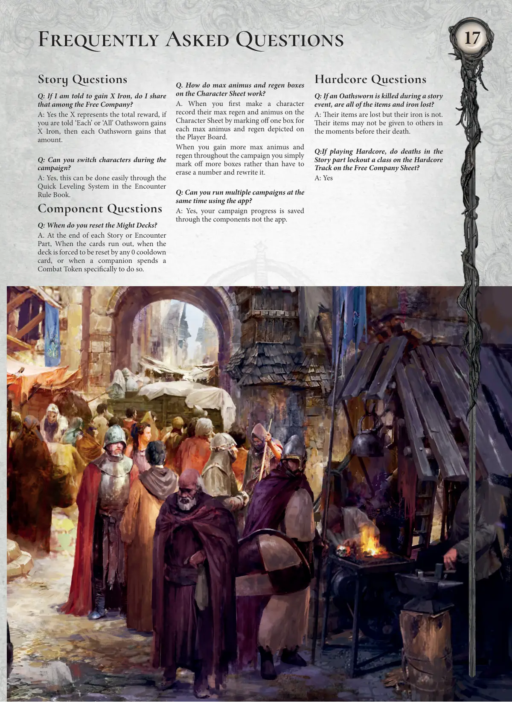
📝 第 17 页 AI 机翻对照（点击展开）
常见问题
故事问题
问：如果我被要求获得X点铁，我需要将其分配给自由佣兵团吗？
答：是的，X代表总奖励，如果被告知"每个"或"全部"誓约者获得X点铁，那么每个誓约者都会获得该数量的铁。
问：在战役过程中可以切换角色吗？
答：是的，这可以通过《遭遇规则书》中的快速升级系统轻松完成。
组件问题
问：什么时候重置力量牌库？
答：在每个故事或遭遇部分结束时、牌用完时、任何0冷却牌强制重置牌库时，或者当同伴专门花费一个战斗指示物来重置牌库时。
问：角色卡上的最大灵能和再生框如何工作？
答：当你首次创建角色时，通过在玩家版图上标记每个最大灵能和再生对应的方框，在角色卡上记录你的最大再生和灵能值。
在整个战役过程中，当你获得更多的最大灵能和再生时，只需标记更多的方框，而不必擦除数字重写。
问：可以使用应用程序同时运行多个战役吗？
答：是的，你的战役进度是通过组件保存的，而不是应用程序。
硬核模式问题
问：如果在故事事件中一个誓约者死亡，所有物品和铁都会丢失吗？
答：他们的物品会丢失，但他们的铁不会。他们的物品不能在死亡前的那一刻交给他人。
问：如果玩硬核模式，故事部分的死亡会导致自由佣兵团卡上的硬核轨道上的职业被锁定吗？
答：是的
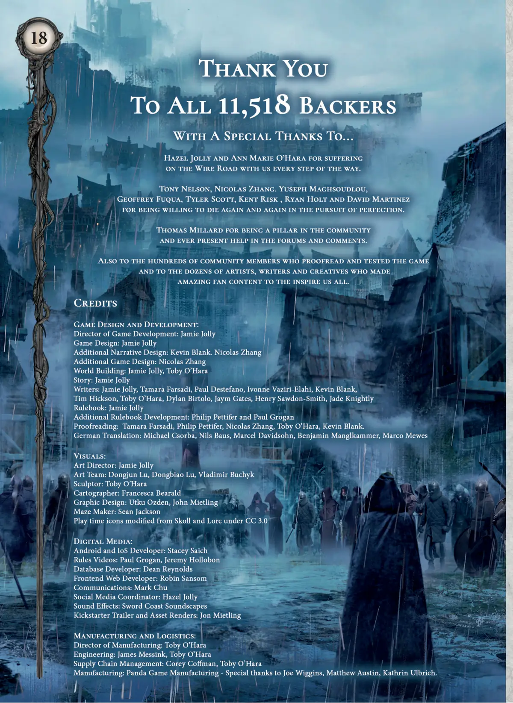
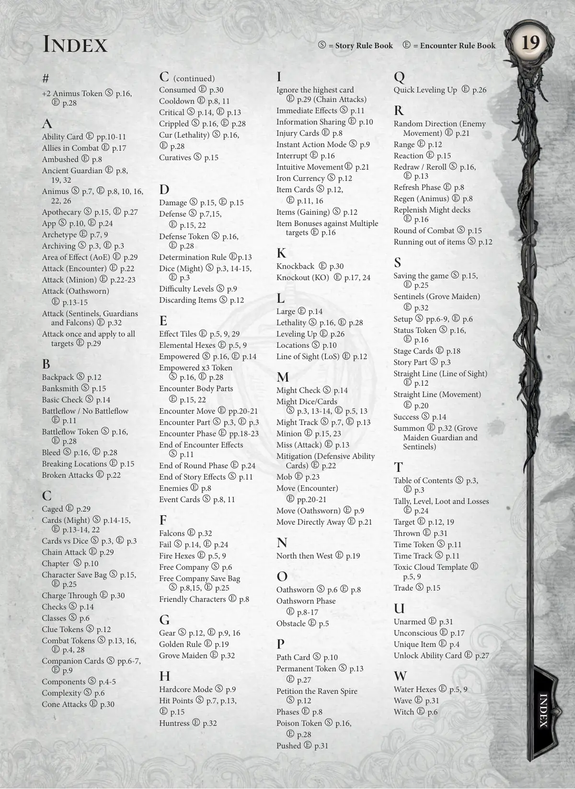
📝 第 19 页 AI 机翻对照（点击展开）
索引
#
+2 灵魂指示物 s p.16,
e p.28
A
能力卡牌 e pp.10-11
战斗中的盟友 e p.17
伏击 e p.8
古代守护者 e p.8,
19, 32
灵魂 s p.7, e p.8, 10, 16,
22, 26
药剂师 s p.15, e p.27
应用 s p.10, e p.24
原型 e p.7, 9
归档 s p.3, e p.3
效果范围(AoE) e p.29
攻击(遭遇) e p.22
攻击(爪牙) e p.22-23
攻击(誓约者)
e p.13-15
攻击(哨兵、守护者和猎鹰) e p.32
攻击一次并应用于所有目标 e p.29
B
背包 s p.12
银行工匠 s p.15
基础检定 s p.14
战斗流程/无战斗流程 e p.11
战斗流程指示物 s p.16,
e p.28
流血 s p.16, e p.28
破坏地点 s p.15
无效攻击 e p.22
C
禁锢 e p.29
卡牌(力量) s p.14-15,
e p.13-14, 22
卡牌对骰子 s p.3, e p.3
连锁攻击 e p.29
章节 s p.10
角色保存袋 s p.15,
e p.25
冲锋突破 e p.30
检定 s p.14
职业 s p.6
线索指示物 s p.12
战斗指示物 s p.13, 16,
e p.4, 28
伙伴卡牌 s pp.6-7,
e p.9
组件 s p.4-5
复杂度 s p.6
锥形攻击 e p.30
索引
C (续)
消耗 e p.30
冷却 e p.8, 11
致命一击 s p.14, e p.13
残废 s p.16, e p.28
致命(致命性) s p.16,
e p.28
治疗品 s p.15
D
伤害 s p.15, e p.15
防御 s p.7,15,
e p.15, 22
防御指示物 s p.16,
e p.28
决断规则 e p.13
骰子(力量) s p.3, 14-15,
e p.3
难度等级 s p.9
弃置物品 s p.12
E
效果板块 e p.5, 9, 29
元素六边形 e p.5, 9
强化 s p.16, e p.14
强化x3指示物
s p.16, e p.28
遭遇部位
e p.15, 22
遭遇移动 e pp.20-21
遭遇部分 s p.3, e p.3
遭遇阶段 e pp.18-23
遭遇结束效果
s p.11
回合结束阶段 e p.24
故事结束效果 s p.11
敌人 e p.8
事件卡牌 s p.8, 11
F
猎鹰 e p.32
失败 s p.14, e p.24
火焰六边形 e p.5, 9
自由连 s p.6
自由连保存袋
s p.8,15, e p.25
友方角色 e p.8
G
装备 s p.12, e p.9, 16
黄金法则 e p.19
林中少女 e p.32
H
硬核模式 s p.9
生命值 s p.7, p.13,
e p.15
女猎人 e p.32
I
忽略最高卡牌
e p.29 (连锁攻击)
即时效果 s p.11
信息共享 e p.10
伤害卡牌 e p.8
即时行动模式 s p.9
中断 e p.16
直觉移动 e p.21
铁币 s p.12
物品卡牌 s p.12,
e p.11, 16
物品(获得) s p.12
物品对多个目标的加成
e p.16
K
击退 e p.30
击倒(KO) e p.17, 24
L
大型 e p.14
致命性 s p.16, e p.28
升级 e p.26
地点 s p.10
视线(LoS) e p.12
M
力量检定 s p.14
力量骰子/卡牌
s p.3, 13-14, e p.5, 13
力量轨迹 s p.7, e p.13
爪牙 e p.15, 23
未命中(攻击) e p.13
减轻(防御能力卡牌) e p.22
群 e p.23
移动(遭遇)
e pp.20-21
移动(誓约者) e p.9
直接远离移动 e p.21
N
先北后西 e p.19
O
誓约者 s p.6 e p.8
誓约者阶段
e p.8-17
障碍 e p.5
P
路径卡牌 s p.10
永久指示物 s p.13
e p.27
向乌鸦尖塔请愿 s p.12
阶段 e p.8
毒素指示物 s p.16,
e p.28
被推动 e p.31
s = 故事规则书 e = 遭遇规则书
Q
快速升级 e p.26
R
随机方向（敌人移动） e p.21
范围 e p.12
反应 e p.15
重抽/重掷 s p.16,
e p.13
补充阶段 e p.8
再生（灵能） e p.8
补充力量牌库 e p.16
回合战斗 s p.15
物品耗尽 s p.12
S
保存游戏 s p.15,
e p.25
守卫者（林中少女） e p.32
设置 s pp.6-9, e p.6
状态指示物 s p.16,
e p.16
阶段卡牌 e p.18
故事部分 s p.3
直线（视线） e p.12
直线（移动） e p.20
成功 s p.14
召唤 e p.32（林中少女守卫者和
守卫者）
T
目录 s p.3,
e p.3
统计、等级、战利品和损失 e p.24
目标 e p.12, 19
投掷 e p.31
时间指示物 s p.11
时间轨道 s p.11
毒云模板 e
p.5, 9
交易 s p.15
U
无武装 e p.31
失去知觉 e p.17
独特物品 e p.4
解锁能力卡牌 e p.27
W
水六边形 e p.5, 9
波浪 e p.31
女巫 e p.6
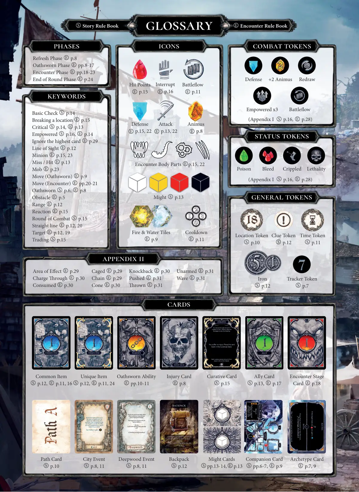
📝 第 20 页 AI 机翻对照（点击展开）
基础检定 s p.14
突破一个地点 e p.15
关键 s p.14, e p.13
强化 s p.16, e p.14
忽略最高牌 e p.29
视线 e p.12
爪牙 e p.15, 23
未命中/命中 e p.13
暴徒 e p.23
移动 (宣誓者) e p.9
移动 (遭遇) e pp.20-21
宣誓者 s p.6, e p.8
障碍 e p.5
射程 e p.12
反应 e p.15
战斗轮 s p.15
直线 e p.12, 20
目标 e p.12, 19
交易 s p.15
刷新阶段 e p.8
宣誓者阶段 e pp.8-17
遭遇阶段 e pp.18-23
回合结束阶段 e p.24
效果区域 e p.29
冲锋突破 e p.30
已消耗 e p.30
被囚禁 e p.29
连锁 e p.29
锥形 e p.30
击退 e p.30
被推动 e p.31
被投掷 e p.31
无武装 e p.31
波浪 e p.31
普通物品
s p.12, e p.11, 16
独特物品
s p.12, e p.11, 24
宣誓者能力
e pp.10-11
伤害卡牌
e p.8
路径卡牌
s p.10
城市事件
s p.8, 11
深林事件
s p.8, 11
背包
s p.12
力量卡牌
s pp.13-14, e p.13
治疗卡牌
s p.15
盟友卡牌
s p.13, e p.17
遭遇阶段
卡牌 e p.18
伙伴卡牌
s pp.6-7, e p.9
职业卡牌
e p.7, 9
火与水板块
e p.9
冷却时间
e p.11
力量 s p.13
遭遇部位 ep.15, 22
攻击
e p.13, 22
灵魂能量
e p.8
防御
e p.15, 22
生命值
e p.15
中断
e p.16
战斗流程
e p.11
强化 x3
战斗流程
防御
+2 灵魂能量
重抽
中毒
流血
残废
致命性
线索指示物
s p.12
地点指示物
s p.10
时间指示物
s p.11
铁
s p.12
追踪指示物
s p.7
(附录 I s p.16, e p.28)
(附录 I s p.16, e p.28)
e 遭遇规则书
s 故事规则书
术语表
阶段
关键词
图标
战斗指示物
状态指示物
通用指示物
附录 ii
卡牌